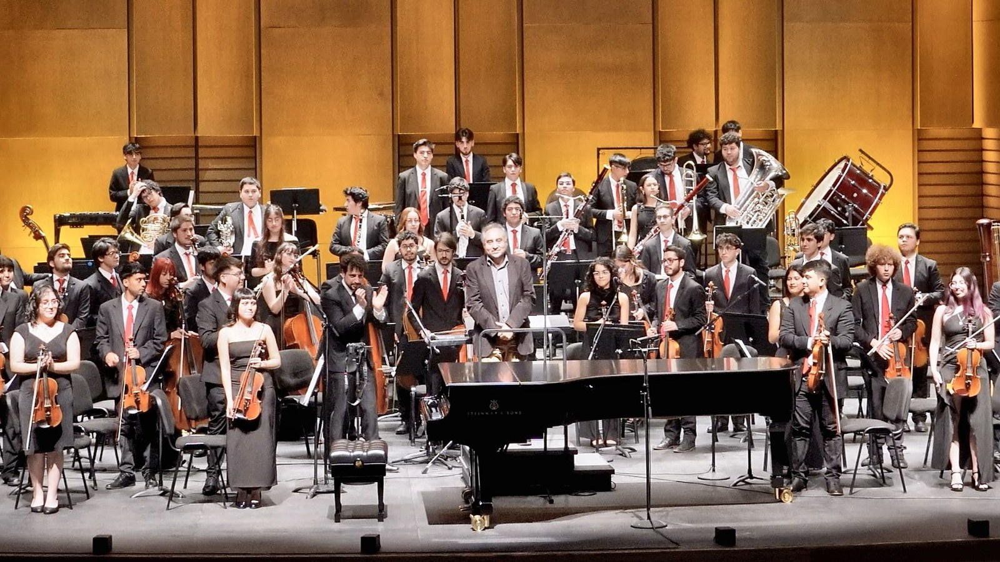
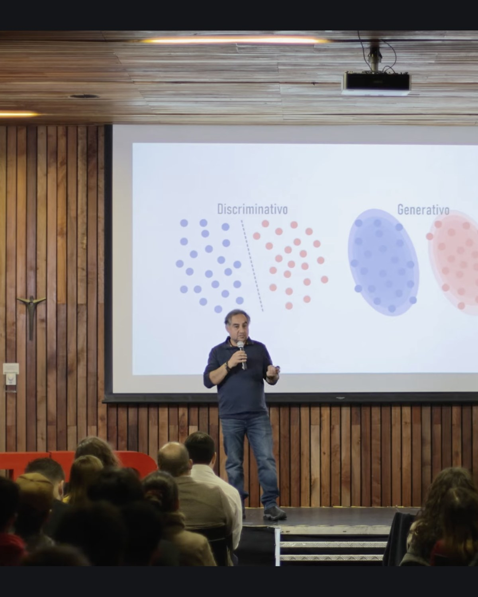
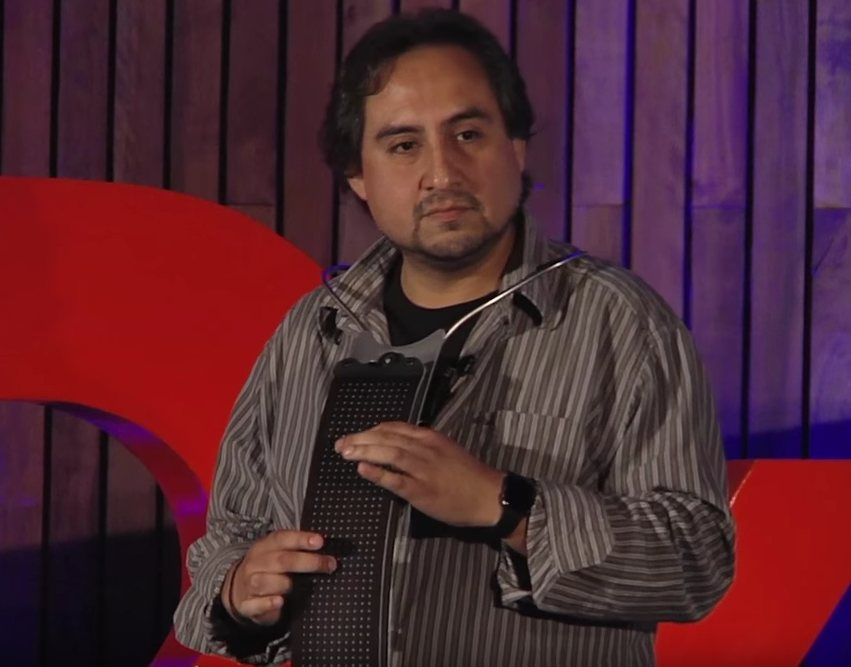
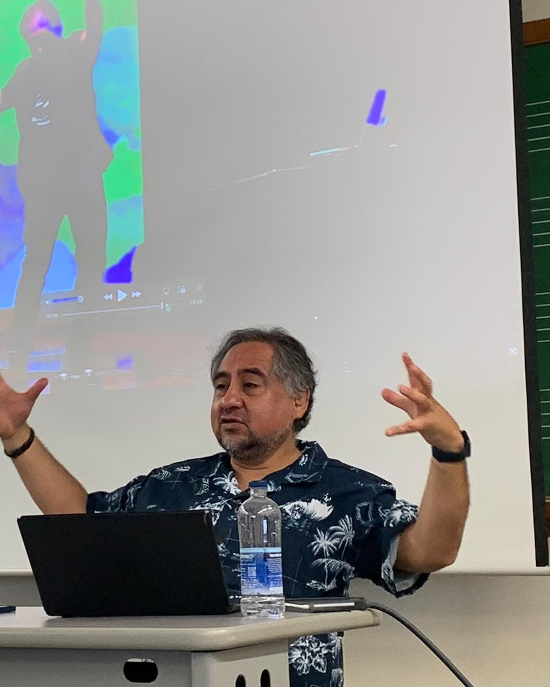

Around seventy works: solo instruments, chamber ensembles, chorus, orchestra, acousmatic music, robot and laptop orchestras, new interfaces, installation.Alrededor de setenta obras: instrumentos solos, cámara, coro, orquesta, música acusmática, orquestas de robots y laptops, nuevas interfaces, instalación.
EnterEntrar →
Around seventy peer reviewed papers. Director of the first ANID Anillo awarded to music. Best Paper Award, ICMC 2023.Cerca de setenta artículos con revisión de pares. Director del primer Anillo ANID otorgado a la música. Best Paper Award, ICMC 2023.
EnterEntrar →
The Arcontinuo, an electronic instrument built in Chile. Algorithms, synthesis methods and devices, from fuzzy logic to fractional Fourier.El Arcontinuo, un instrumento electrónico construido en Chile. Algoritmos, métodos de síntesis y dispositivos, de la lógica difusa a Fourier fraccional.
EnterEntrar →
Full Professor in music and in electrical engineering. Founder and first director of the first doctorate in arts in Chile. Nineteen supervised theses.Profesor Titular en música y en ingeniería eléctrica. Fundador y primer director del primer doctorado en artes de Chile. Diecinueve tesis dirigidas.
EnterEntrar →